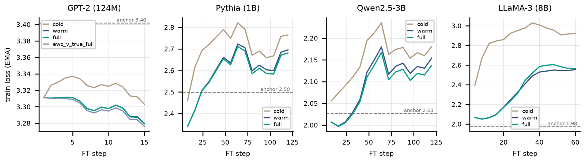
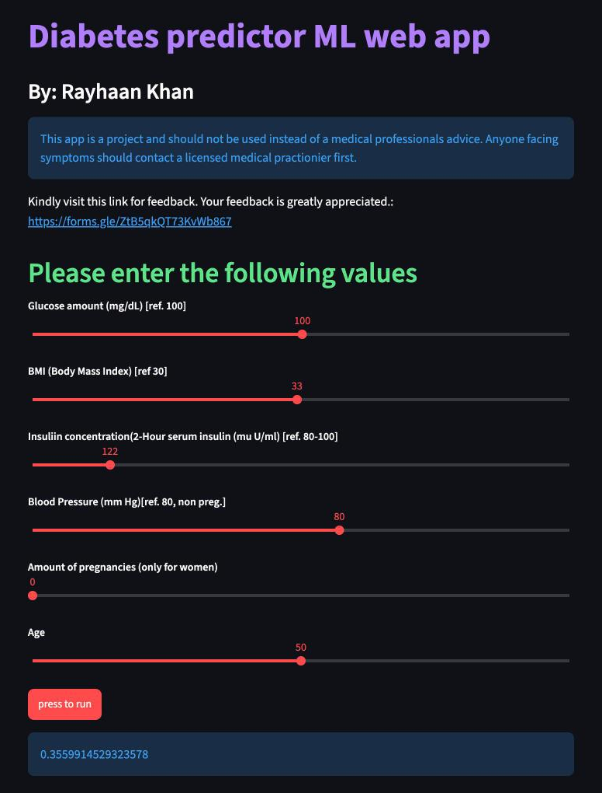

I am in my final year of Cambridge A Levels at Podar International School in Navi Mumbai. My research asks what a trained neural network needs in order to keep learning after release. At ADIA Lab I worked on rebuilding the optimizer state that public checkpoints leave out, which became my first-author manuscript, now under review at TMLR. At MBZUAI I am testing test-time training, where a model updates part of its weights while it reads.
I also founded Mumbai AI Lab, which teaches school students to use AI as a tutor that asks them questions. Away from the screen I photograph wildlife, read about shark biology and reread Tintin.
Finalist in the International Computer Science Competition.
Mentored my school's grade 9 team to first place among 68 schools at the IIT Bombay National Robotics League.
Research
I study what happens to a network after training ends. How can training continue without losing what the network knew, and can the network adapt to new input at test time? Earlier work applied machine learning to diabetes screening.
In-Place TTT turns the MLP down-projection in some layers of a language model into fast weights that update from the input during inference. Its published results on Qwen3-4B show long-context gains over a matched control. Those gains mix two causes, the update at test time and the training with the module.
I continued pretraining Qwen3-4B for 3 billion tokens with and without the module, on identical data in identical order. I then evaluated the trained model twice, with its update on and off. Switching the update off changes the RULER score by at most 0.4 points up to 64k tokens, so the gains come from training with the module. This text-model study is the baseline for porting the method to a Qwen vision-language model.
Hover or tap a point for its value and 95% interval.
Where the gain comes from. Differences in the RULER mean over 13 tasks, 500 instances per task, averaged over two seeds, with 95% bootstrap intervals. The update effect compares the trained TTT model with its update on and off. The training effect compares the update-off model with the control. Together they add up to the TTT arm's lead over the control. Data from the study's results file.
Study design. Two arms continue pretraining from Qwen3-4B-Base on the same 3 billion tokens. The TTT checkpoint is evaluated twice next to the control, so the gain splits into what the test-time update adds and what training with the module changed. Figure 1 of the report.
Public language-model checkpoints ship weights without the AdamW state that trained them, so continued pre-training restarts the optimizer from zero. The first steps of that cold start overshoot, and the model forgets part of what it knew. We show that about 200 short training steps on public data rebuild the useful part of the missing state.
Warm-starting from the rebuilt state removes the early overshoot. Used as an elastic weight consolidation anchor, it matches the target loss of a cold start with about three times less forgetting at 1B parameters. We tested it on models from GPT-2 (124M parameters) to LLaMA-3 (8B).
My part: a pipeline that logged optimizer buffers while training a CIFAR-10 CNN, used to measure rebuilt state against the original.

The cold-start overshoot at four scales. Training loss over the first fine-tuning steps, from GPT-2 (124M) to LLaMA-3 (8B). The cold start (sand) climbs furthest above the checkpoint's own loss (dashed line). Warm start from rebuilt state (navy) and the full recipe with the EWC anchor (teal) climb less.
Method. From a weights-only checkpoint, about 200 low-rate AdamW steps on public data rebuild the optimizer's moment estimates. The second moment approximates the Fisher diagonal, so it serves as an anchor against forgetting. Figure 1 of the manuscript.About the toy on the left. Both runs fine-tune with Adam and noisy gradients from the same checkpoint (ring), which lies on the floor of a narrow valley. With the state set to zero, the first step moves the full learning rate along both axes, so the cold start jumps across the valley and its loss rises. Rebuilt second-moment estimates from 200 tiny steps at the checkpoint shrink the steps along the steep, noisy axis. The small trace under the map is the loss of both runs. It is an illustration of the mechanism, with made-up numbers.
I trained models to estimate diabetes risk from eight routine measurements, including glucose, BMI, blood pressure and age, on a public dataset of 768 patients. I compared fastai and XGBoost models, explained predictions with feature importance and checked accuracy across subgroups. The deployed web app lets a user change the inputs and get a new estimate. The repository follows Microsoft's Team Data Science Process, from project charter to customer acceptance.

The demo app. Sliders set the inputs and the model returns a risk estimate between 0 and 1. It is a student project and not a medical tool.
With the plugin installed, Claude asks a student what they have tried, finds the one step that blocks them and asks one question per turn. Help rises only when the student stalls, from a nudge to the relevant concept, then a worked step, then the full solution. The design follows a field experiment with nearly 1,000 high school students. Those who practised with an unrestricted chatbot scored 17% lower on a later exam, and a version that gave hints removed most of that harm.
Sessions on alternate Sundays at three levels teach school students to use AI as a questioning tutor, so they keep doing the reasoning. The sessions draw on studies of AI tutoring and retrieval practice.
STEM Club, Podar International School, founder2024
Peer sessions on training a first model, and talks on AI for grade 3 classes. Mumbai AI Lab grew out of the club.
IIT Bombay National Robotics League, team mentor2025
Guided my school's grade 9 team on Arduino control and a small vision model for obstacle avoidance. The team placed first among 68 schools.
Fieldwork
Intertidal survey, Juhu rocky shore, MumbaiMarine Science, 2025
Quadrat sampling of the rocky shore and a Lincoln index estimate of a clam population. The index marks M clams, catches C later, counts the R marked clams among them and estimates the population as N ≈ MC/R. We also recorded a juvenile bamboo shark in a rock pool.
Awards
Finalist, International Computer Science Competition (ICSC)2025
First place among 68 schools, IIT Bombay National Robotics League, as team mentor2025
Third place, district inter-school 3D Printing Competition2024
Computer Wiz Award, Podar International School, for the highest computer science proficiency in the grade2022
Education
Podar International School, Nerul, Navi Mumbai. Cambridge International A Levels, graduating 2027, in Mathematics, Computer Science, Marine Science, Physics, Biology and English. Highest AS Level Marine Science result in the cohort.
Courses. Harvard CS50P, Introduction to Programming with Python (2024, verified). fast.ai Practical Deep Learning for Coders (2022). Linear algebra and calculus for machine learning, self-taught.
Tools. Python with NumPy, pandas, scikit-learn, PyTorch, XGBoost and fastai; Git; Arduino in C and C++; 3D printing.
Languages. English and Hindi, fluent. German, beginner.